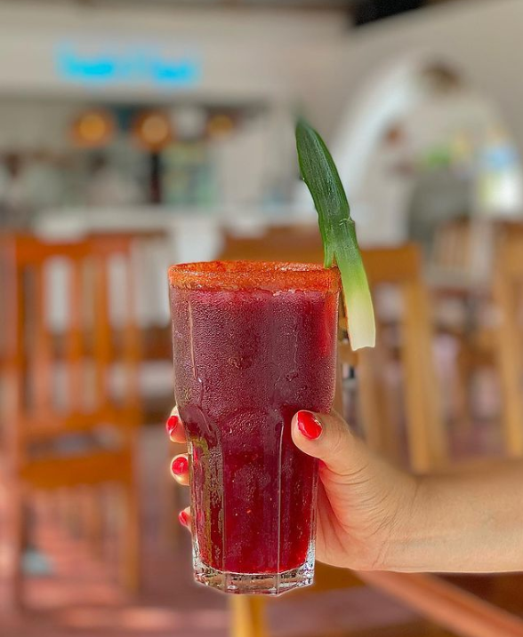
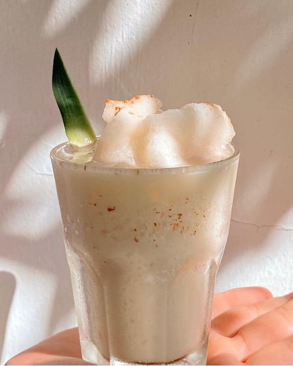
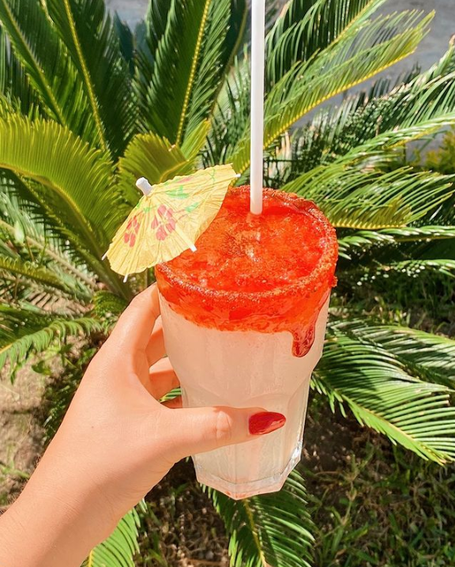
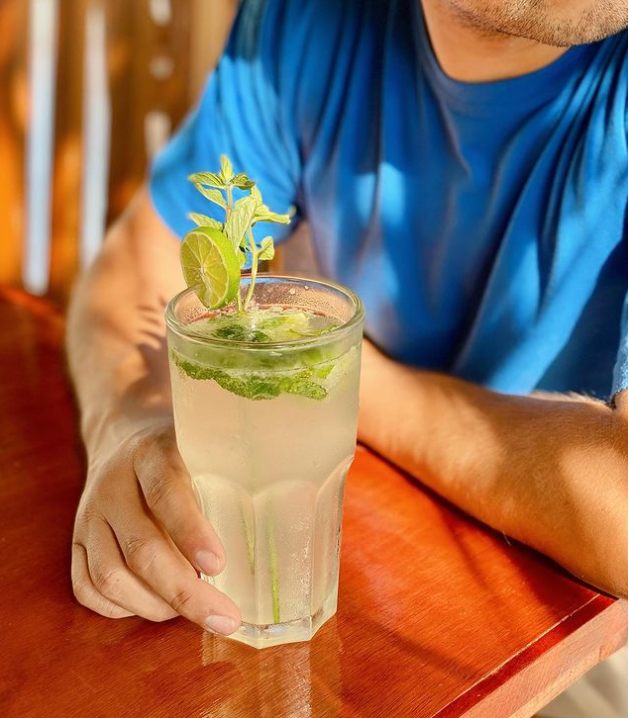

Cocteles de el Balajú que deberías probar
HIRam013
Mezcalita
"Si algo te agüita, tómate una mezcalita 🍹", es una de las frases que tiene el restaurante en uno de sus pasillos para que puedas disfrutarlo con el calor caracteristico del sur de Veracruz, donde se pueden encontrar de diferentes sabores como lo es de jamaica y tamarindo

Piña Colada
El gran sabor de una piña colada si se antoja con este calor que se sufre en el estado de Veracruz, saben muy buenos ya que el preparado lo hace alguien especializado y le dan un toque de canela en polvo

Margarita
Este coctel está compuesto por tequila, triple sec y jugo de lima o limón para refrescarse un rato.

Mojito
Este coctel es uno de los favoritos ya que tiene ron blanco, limon y agua mineral, pero de igual forma puedes pedirlo de algun sabor como lo es fresa, piña o mango.
